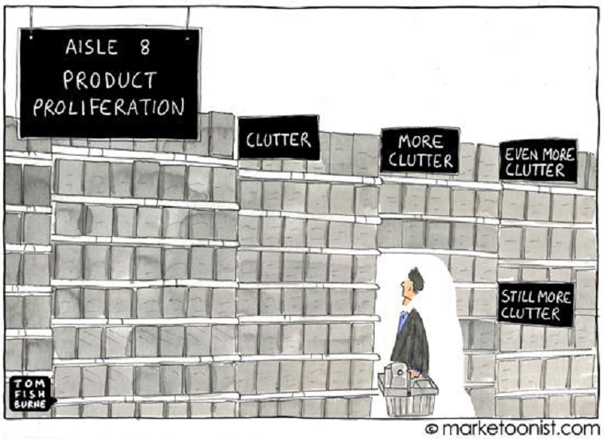
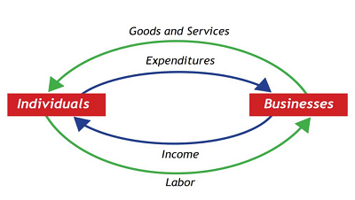

Chapter 1 - Data Sourcing
Contents
Chapter 1 - Data Sourcing#

The modern data landscape has so much data…no, really—SO much data. Which data should you use?
Chapter preview#
Learning objectives#
Define the practice of “data sourcing.”
Explore common issues that arise in the context of data sourcing.
Practice operationalizing data sourcing best practices.
Key question: Where does data come from, and how does data authorship impact data structure, richness, etc.?
Chapter prerequisites: Python imports#
Before running any code blocks in the following chapter, please ensure you have the necessary Python packages installed via the following code block:
%pip install pandas
%pip install numpy
%pip install matplotlib
1.0. Preface: why source good data?#
Analysis for any research project begins with data sourcing; without any data, there’s no tests to run, no trends to identify, no hypotheses to validate, etc.
But, the modern data landscape is vast and can be overwhelming—look up “X + dataset” for almost topic, and you’ll likely find a multitude of resources published by private organizations, government agencies, licensed data vendors, open-source groups, etc. Does it matter whose data you go with?
Absolutely — identifying and sourcing quality data is essential to the research process. If conducting analyses is like cooking, sourcing data is like acquiring ingredients—whether you’re following a recipe or not, things will likely not turn out well if the base inputs are of poor quality.
1.1. Defining “data sourcing”#
Data sourcing is the process of:
finding;
assessing; and,
selecting
a data resource to work with. Even for the same statistic, data resources can differ by basic attributes like values, author, purpose and more meta factors like availability, structure, representativeness, etc.
Purposeful data sourcing is often overlooked in favor of convenience (i.e., using the first available and/or most popular dataset), but as we’ll see, data sourcing decisions determine data attributes—which can ultimately impact downstream analysis.
1.2. Issues in data sourcing#
Many issues can arise when attempting to source quality data, but in this chapter, we’re going to explore this topic in the context of three practices:
Deciding between multiple data authors;
Understanding author incentives and purpose; and
Validating data and data generation approaches.
Scroll down to get started!
1.5. Validating data and data generation approaches#
The final issue in data sourcing we’ll be discussing is the validation of data and its associated dataset generation approach:
DISCUSSION 7: DEFINING DATA GENERATION APPROACHES#
A data generation approach is simply the methodology used to collect and compute a given data resource. In a way, this topic is best described as a data sourcing meta-issue since:
Validating either data itself and/or its generation approach can lend additional credence to a data source (helping you to decide between multiple data authors); and
Understanding which data generation approach was used and why can be informative as to research incentives and intended purpose.
And just like understanding data author incentives and intended purpose, grappling with this issue can be thought of answering two questions:
Does the approach this researcher, agency, etc. uses to compute this metric or dataset commonly accepted and reasonable?
If it is, does this data author provide the necessary data resources and instructions for you to re-generate the associated dataset? (If you do, does your dataset match theirs?)
To better understand this topic, let’s explore it in the context of GDP data!
DISCUSSION 8: GDP GENERATION APPROACHES#
GDP can be measured in three different ways:
The production approach sums the value-added at each stage of production for all goods and services (where value-added is defined as the sales value minus the value of intermediate inputs);
The expenditure approach sums the value of all purchases made by final users (i.e., the consumption of households, the investment of companies, and the purchases of goods and services by goverment entities and foreign consumers).
The income approach sums all of the incomes generated by production (including but not limited to the compensation employees receive and the operating surplus of companies).
In theory, each of these approaches should generate the same GDP figures/data:
Consider the expenditure and income approaches - in a simplified economy with consumers and businesses, every dollar a consumer receives as income (income approach) will be accounted for as a dollar spent on a good or service from some business (expenditure approach).
This relationship is neatly captured in a diagram shown in introductory economics classes across the world, the circular flow diagram:

Is it really this simple? We shall see…
The BEA publishes official GDP data using the expenditure approach (see Page 4, Section “Income”), but also measures and releases GDP figures generated using the income approach as GDI (Gross Domestic Income) data. Let’s see how the theoretical 1:1 relationship holds up in practice (data from FRED):
CODING EXERCISE: DATA GENERATION & GDP COMPUTATION APPROACHES#
# required imports:
import os # use: file management and access
import numpy as np # use: some calculations
import pandas as pd # use: data intake and manipulation
import matplotlib.pyplot as plt # use: data viz.
""" DATA SOURCING: DATA GENERATION APPROACHES """
# importing the data (index column has year values):
""" BINDER USERS: """
# uncomment: gdp_approaches_data = pd.read_csv('./sample_datasets/gdp_diff_approaches.csv', encoding='utf-8')
""" COLAB USERS: """
# !mkdir data # create a '/data' directory if one doesn't already exist
!wget -P data/ https://raw.githubusercontent.com/roflauren-roflauren/GearUp-MessyData/main/fall_2022/sample_datasets/gdp_diff_approaches.csv # retrieve the dataset from remote storage on GitHub
gdp_approaches_data = pd.read_csv("data/gdp_diff_approaches.csv", encoding='utf-8')
# let's take a subset of the data:
gdp_approaches_data = gdp_approaches_data.tail(15)
# data structure: index, date, gdp, gdi (billions of nominal dollars)
gdp_approaches_data.tail(10)
# scatter plots of the data:
plt.plot(gdp_approaches_data['date'], gdp_approaches_data['gdp'], linestyle='-', marker='o', label='GDP: EXPENDITURES APPR.', color='limegreen')
plt.plot(gdp_approaches_data['date'], gdp_approaches_data['gdi'], linestyle='-', marker='o', label='GDP: INCOME APPR.', color='blue')
# formatting options:
plt.title("GDP DATA: INCOME VS. EXPENDITURES APPROACH")
plt.xlabel("Year"), plt.ylabel("GDP")
plt.xticks(rotation = 30, fontsize = 8)
plt.legend(loc='upper left')
plt.tight_layout()
The two approaches seem to generate reasonably similar figures, but let’s get a better picture of just the differences in measurements over time:
# compute the diff:
gdp_approaches_data['gdp_diff'] = gdp_approaches_data['gdi'] - gdp_approaches_data['gdp']
# plot the diff:
plt.plot(gdp_approaches_data['date'], gdp_approaches_data['gdp_diff'], linestyle='-', marker='o', color='dodgerblue')
# formatting options:
plt.title("GDP DATA: INCOME VS. EXPENDITURES APPROACH")
plt.xlabel("Year"), plt.ylabel("GDI LESS GDP (BILLIONS OF $)")
plt.xticks(rotation = 30, fontsize = 8)
plt.axhline(y=0, color='red', linestyle='-')
plt.tight_layout()
As we can see, for the past 7 fiscal quarters, GDI has consisently been measured as ~500+ billion dollars greater than GDP. Why is this? In the case of GDP, the disparity between the measurements resulting from different approaches is generally the product of multiple factors:
Meta-issues like differences in the accuracy and timeliness of contributing data resources can give rise to meaningful differences.
Structural differences in how the approaches operate can also contribute to the divergence:
For instance, if an individual saves a portion of their income in cash, the value of these savings are reflected in the income approach data but not the expenditure approach data for the same year.
Individuals might save their income as inflation appears to be rising (as an inflationary hedge) and/or as economic conditions appear to worsen - does this sound familiar?
DISCUSSION 9: COMPARING GDP & GDI#
Thus, in practice, GDP measurements (and data more generally) generated through different approaches can differ substantially.
And, while a real-life example is not readily available, one could imagine how selectively using GDP data generated by different approaches could be a means to exaggerate an economic conclusion:
For example, a researcher could use income-approach GDP data during a period of economic recession (where there are typically deflated earnings) and then use expenditure-approach GDP data during the post-recession years (where there is typically an influx of expenditures purchased using saved cash) to depict stronger-than-actual economic recovery.
Still, it’s important to note that, while GDP as measured by the expenditure approach is more commonly used, both GDP and GDI are well-established measures. In any research scenario where multiple approaches to data generation or collection exist, if the sources are similarly reputable, you should seek appropriate justification for the approach(es) used.
1.5. - CONCLUSION#
As a final note, when a data generation approach is offered, you can also attempt to generate a data resource yourself:
While this practice is likely one of the strongest forms of data validation possible, it also is limited by varying degrees of applicablity; your ability to do so is contingent on the availability of the supporting/underlying datasets - e.g., you likely wouldn’t be able to attempt this practice for a behavioral experiment, a mass measurement project like GDP, etc.
Also, this practice is not at all necessary to conduct good, grounded research. It can be particularly valuable when you wish to co-opt a methodology or dataset that is relatively new in a field, but even then is not a requisite depending on the rigorousness of the original datasource.
Ultimately, data and data generation approach validation are like the dessert of the data sourcing meal - not essential, but it certainly helps round things out!
1.6. Chapter Takeaways#
When identifying a dataset to work with, remember that usability is not the only criterion of interest — always traceback each resource’s original author and verify that author’s credibility.
Always consider the incentives and intended purpose of the work through which data is acquired; doing so can help you identify a reliable data resource more quickly, while also foreshadowing implications for the data itself (and your research should you use it).
Be sure to identify and evaluate the data generation approach used to create an external data resource — especially for figures/metrics where multiple data resources are available. When possible and valuable, consider replicating the data generation process to fortify your usage of the data resource.